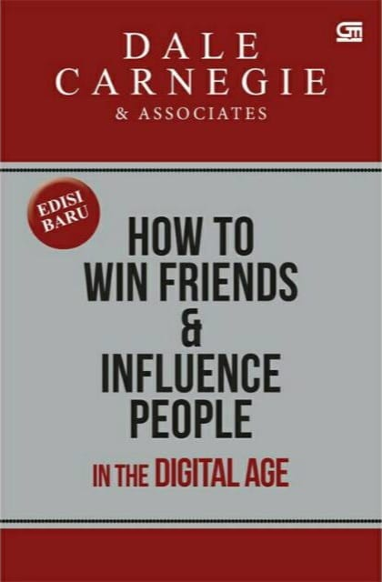
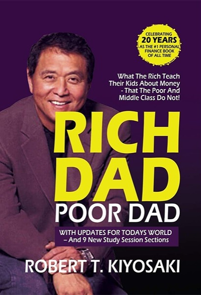
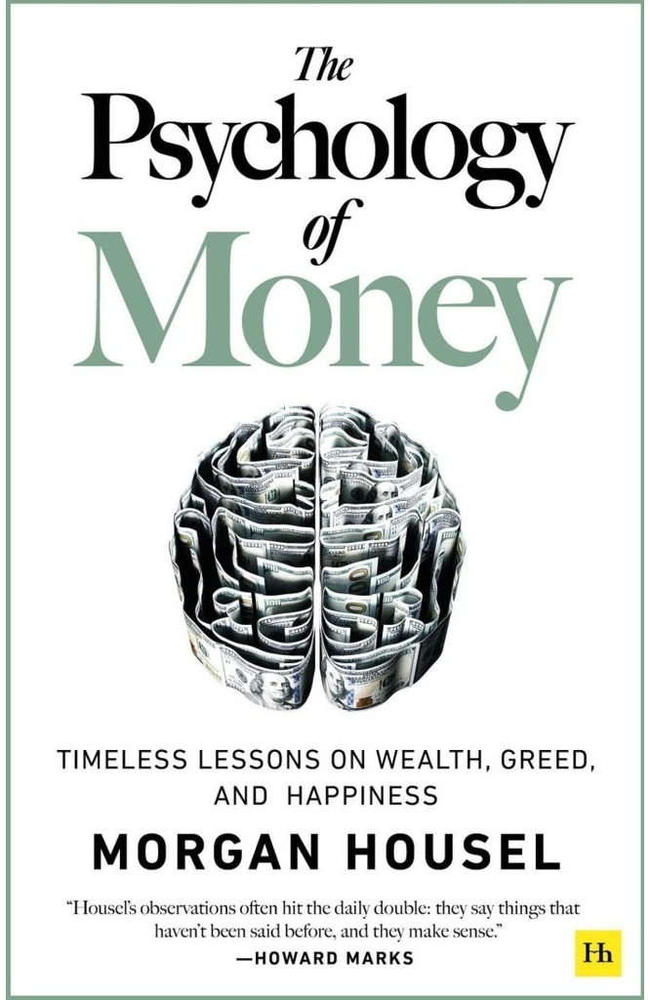
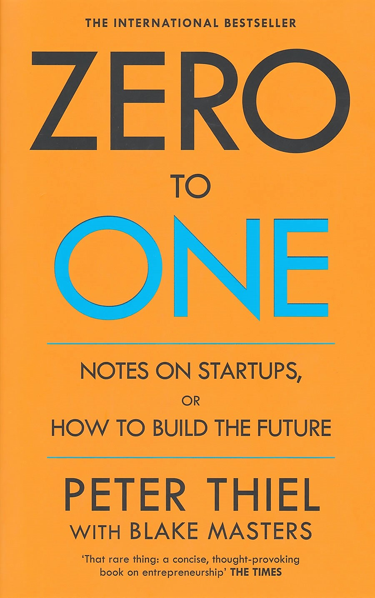

Ferry's Library
Buku #1
How To Win Friends & Influence People
By : Dale Carnegie

Genre : Self-help book
Kemungkinan besar, masalah terbesar yang anda hadapi adalah berurusan dengan orang lain. Pernyataan inilah yang menjadi fondasi dari buku How To Win Friends and Influence People.
Seni komunikasi adalah seni kepemimpinan. Dengan membaca buku ini, anda bisa meningkatkan kemampuan dalam memengaruhi orang lain, mempererat hubungan, serta menguntungkan dalam percakapan, kolaborasi, hingga perusahaan.
Buku #2
Rich Dad Poor Dad
By : Robert T. Kiyosaki

Genre : Personal Finance
Robert memiliki 2 perspektif mengenai keuangan. Ia besar dan berkembang dari 2 sosok ayah, yakni ayah kaya dan ayah miskin. Dari hal tersebutlah yang membuat robert dapat mengontraskan bagaimana cara orang kaya dengan orang miskin dan menengah dalam mengajarkan pola pikir tentang uang kepada anaknya.
Dengan membaca buku ini, anda bisa mempunyai pola pikir yang lebih luas mengenai keuangan, serta dapat memegang kendali atas masa depan keuangan anda.
Buku #3
Atomic Habits
By : James Clear

Genre : Self-help book
Sering kali kita mengira bahwa kesuksesan yang masif menuntut aksi yang masif pula. Padahal dalam realitanya, sesuatu yang besar selalu dimulai dari yang kecil. Kebiasaan yang sangat kecil tapi berlanjut dalam waktu yang lama bisa sangat luar biasa dampaknya.
Dengan membaca buku ini, anda akan diberikan pemahaman mengenai bagaimana kebiasaan kecil dapat menghasilkan dampak yang luar biasa, serta strategi yang efektif dalam membentuk kebiasaan baik dan menghilangkan kebiasaan buruk.
Buku #4
Psychology of Money
By : Morgan Housel

Genre : Self-help book
Premis dari buku ini adalah mengelola keuangan dengan baik itu lebih penting daripada memiliki kecerdasan dalam aspek keuangan.
Dengan membaca buku ini, anda dapat mempunyai sudut pandang lain mengenai keuangan. Sudut pandang yang ditekankan merupakan Soft Skill, perilaku, dan psikologi dalam dunia finansial dan keuangan.
Buku #5
Think and Grow Rich
By : Napoleon Hill

Genre : Self-help book
Pikiran adalah penguasa kehidupan manusia. Kekayaan dan kemiskinan sama-sama berawal dari pemikiran. Dengan pikiran, kita bisa menjadi apa saja yang kita inginkan.
Buku ini merupakan buku legendaris yang ajaran dan pemahamannya tak lekang dimakan waktu. Buku ini berisi prinsip dari berbagai paradigma dan pola pikir orang sukses. Dengan membaca buku ini, anda akan diberikan sudut pandang mengenai bagaimana orang sukses berpikir dan bertindak dalam mencapai kesuksesannya.
Buku #6
Zero To One
By : Peter Thiel

Genre : Business
Meniru tentu saja lebih mudah daripada membuat sesuatu yang baru. Namun, Apabila anda mau dan yakin untuk menciptakan sesuatu yang baru, kesuksesan ada ditangan anda.
Dengan membaca buku ini, anda akan diberi pemahaman bagaimana membangun perusahaan rintisan atau Startup yang baik, sukses, dan berkembang. Buku ini juga memberikan pandangan bahwa dalam mendirikan sebuah perusahaan rintisan atau Startup, anda seharusnya berangkat dari 0 ke 1, dimana anda menciptakan sesuatu yang sebelumnya tidak ada menjadi ada.
Buku #7
Meditations
By : Marcus Aurelius

Genre : Philosophy
Dalam prosesnya menjalani kehidupan, manusia tidak akan terlepas dari permasalahan. Untuk itu, filosofi dapat menjadi teman seperjalanan dalam proses melewati rintangan hidup.
Buku ini akan memberi pandangan mengenai salah satu filosofi kehidupan, yakni stoikisme. Aliran filsafat stoikisme ini dibungkus dalam biografi marcus aurelius serta implementasi teoritisnya, khususnya dalam hal manajemen dan pengendalian emosi.